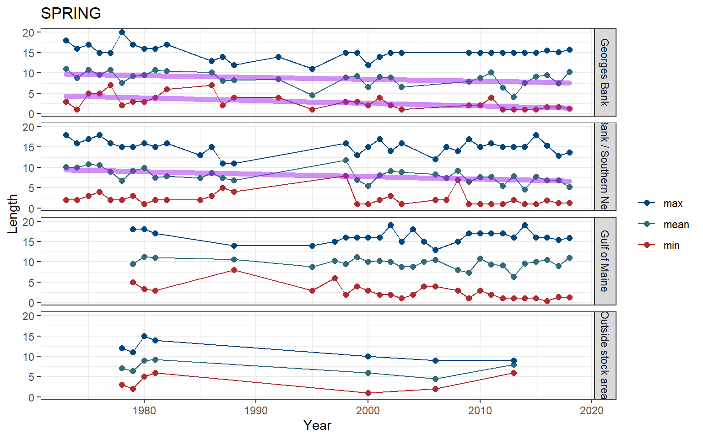
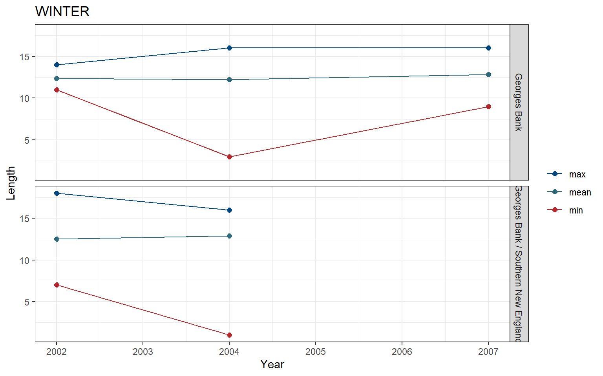
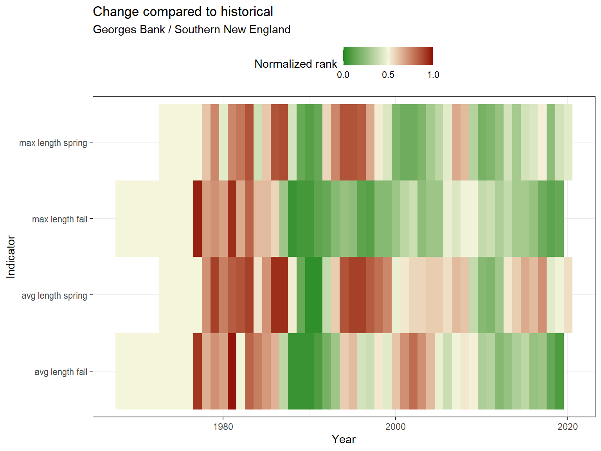

3.1 Length
Length data were pulled from survdat. Only years with more than 10 fish lengths were considered for analysis.
3.1.1 Figures
Separate geom_gls() functions were fit for the minimum, mean, and maximum lengths; trend lines are only shown when the trend was statistically significant, so some plots may have fewer than three trend lines. Please note, sometimes the survey observed a small number of fish outside of the defined stock area.
Figure 3.1: Jonah crab

Figure 3.2: Jonah crab

Figure 3.3: Jonah crab
Risk
See Methods for risk calculation details.

(#fig:risk_stock-1)Jonah crab

(#fig:risk_stock-2)Jonah crab
3.1.2 Summary
| Season | Region | Mean value +- SD (n fish, n years) | Mean value +- SD (n fish, past 5 years) | Range (total) | Range (past 5 years) |
|---|---|---|---|---|---|
| FALL | Georges Bank | 8.19 +- 3.4 (2,698, 41) | 8.37 +- 3.65 (690, 5) | 1 - 18 | 1 - 16.09 |
| FALL | Georges Bank / Southern New England | 8.43 +- 3.2 (3,212, 39) | 9.38 +- 3.53 (381, 4) | 1 - 17 | 1.39 - 17 |
| FALL | Gulf of Maine | 9.82 +- 3.08 (1,934, 30) | 9.86 +- 3.12 (825, 5) | 1 - 17.68 | 1 - 17.68 |
| SPRING | Georges Bank | 8.41 +- 3.65 (2,091, 31) | 8.2 +- 3.23 (686, 5) | 1 - 20 | 1 - 15.73 |
| SPRING | Georges Bank / Southern New England | 8.43 +- 3.46 (3,349, 33) | 6.06 +- 4.43 (150, 5) | 1 - 18 | 1 - 18 |
| SPRING | Gulf of Maine | 9.59 +- 3.6 (2,897, 26) | 9.9 +- 3.16 (1,586, 5) | 0.36 - 19 | 0.36 - 19 |
| SPRING | Outside stock area | 7.1 +- 1.7 (1,562, 7) | 7.95 +- 0.87 (37, 1) | 1 - 15 | 6 - 9 |
| WINTER | Georges Bank | 12.51 +- 1.89 (92, 3) | 12.56 +- 2.06 (70, 2) | 3 - 16 | 3 - 16 |
| WINTER | Georges Bank / Southern New England | 12.67 +- 2.26 (168, 2) | 12.67 +- 2.26 (168, 2) | 1 - 18 | 1 - 18 |
3.1.3 Data
(#fig:length_data)Jonah crab